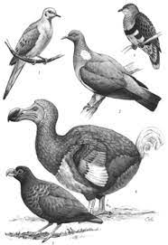
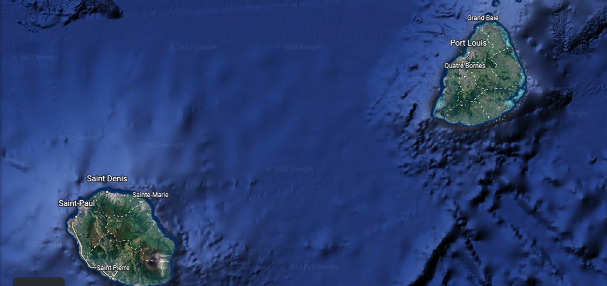

Believe it or not, the dodo's closest living relatives are actually pigeons and doves! |
 The dodo shown next to its close relatives. This image was found on this website. |
|---|---|
|  | Even though the island of Mauritius is an independent island country, the island of Reunion is actually a region of France. |